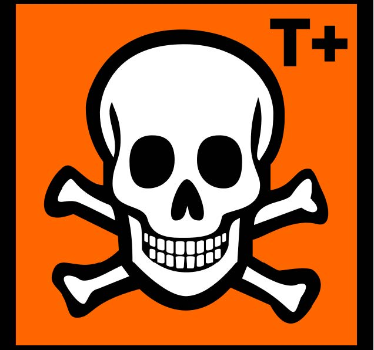

-
1970
Clean Air Act, 1970 (CAA) –to control “dirty” air pollutants such as ozone, nitrogen oxides, sulfur dioxide, and particulate matter. The image is of smoke billowing from a smokestack.
-
1972
Federal Water Pollution Control Act, 1972 (now Clean Water Act- CWA) established the wastewater discharge permitting program-National Pollutant Discharge Elimination Program (NPDES). This image of the Maid of the Mist was taken at the bottom of Niagara Falls the site of Hooker Chemical disaster.
-
1974
Safe Drinking Water Act, 1974 (SDWA)-to protect public health. Mary Workman holds a jar of undrinkable water that came from her well. In 1973 she filed suit against Hanna Coal in Ohio.
-

1976
Resource Conservation and Recovery Act, 1976 (RCRA)-protection of the land. Covers both solid and hazardous waste. The image is a RCRA Satellite Accumulation Area.
-

1976
Toxic Substances Control Act, 1976 (TSCA)-regulates toxic chemical manufacturing and use. The image is of the ECB Hazard Very Toxic Symbol.
-
1980
Comprehensive Environmental Response, Compensation, and Liability Act, 1980 (CERCLA)- also known as “Superfund”. This law was initiated due to Love Canal and established liability for releases and funds to clean up the releases. The image is of Love Canal.
-
1986
Emergency Planning and Community Right-to-Know Act, 1986 (EPCRA)-requires local and state planning for emergency response. Due to Bhopal, India incident in 1984. The image is of the Union Carbide Plant in Bhopal, India.
-
1990
Oil Pollution Act, 1990 (OPA)- due to Exxon Valdez, established stringent standards for transportation and storage of oil. The image is of the people cleaning up after the Exxon Valdez oil spill.
-

1990
Pollution Prevention Act, 1990 (PPA)-multimedia law or actually policy to reduce pollutants at the source instead of end-of-pipe. Also, there are other related laws from Dept. of Transportation (DOT) and Occupational Health (OSHA). The image is of the waste management hierarchy, it was enforced by the PPA.